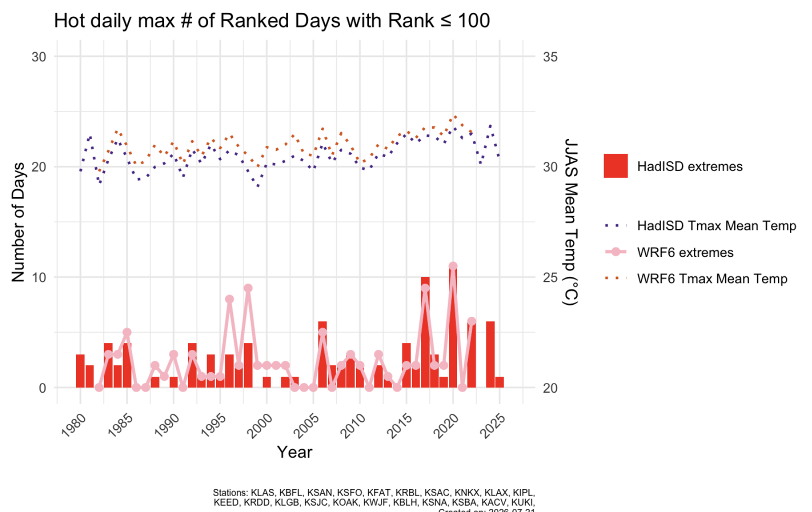
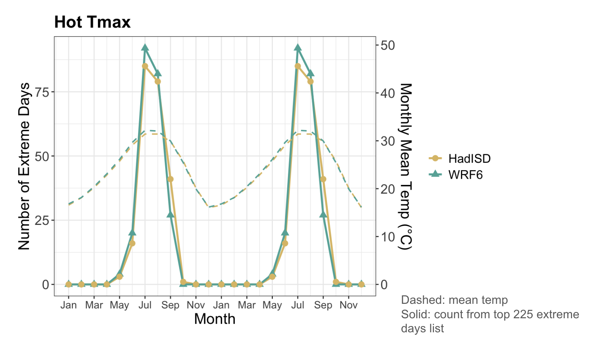
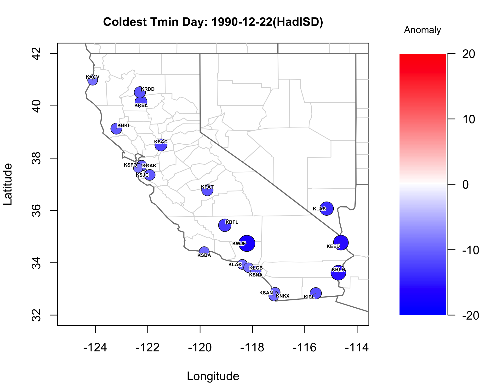

Add image: images/climate-viz-1.jpg

Add image: images/climate-viz-2.jpg

Add image: images/WRF6_map_cold_tmin.png
Fig. 01
SIO climate analysis
Conducted a climate data analysis workflow to identify and map extreme temperature events across weather observations from multiple monitoring stations. Developed a ranking methodology that stays robust when station records are incomplete. The project enabled more reliable comparisons of extreme temperature events over time.
- 40+years of data
- 50+weather stations